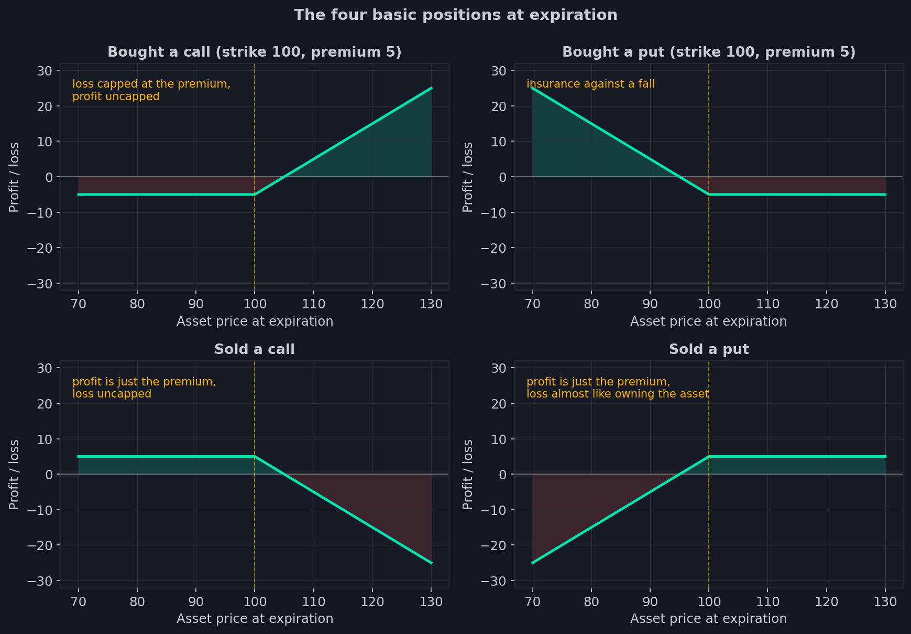
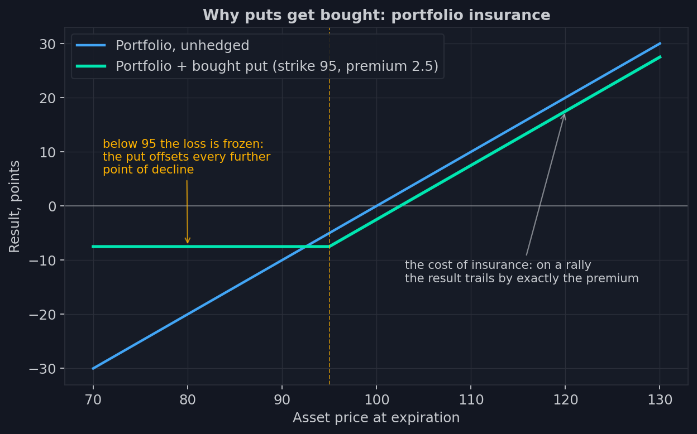
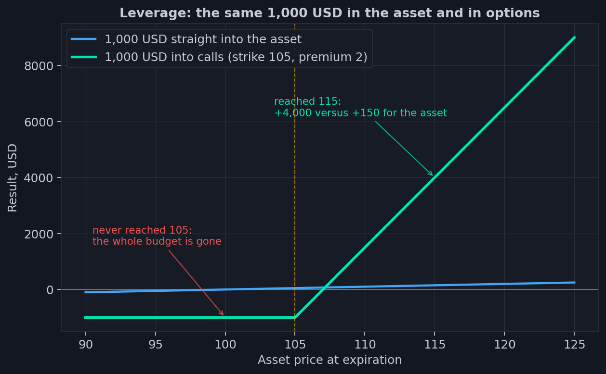

1. Qué es una opción y por qué existe
Imagina que has asegurado tu piso. Pagaste 300 dólares a la aseguradora — y durante
un año duermes tranquilo: si hay un incendio, la compañía está obligada a cubrir el
daño. Lo más probable es que no haya incendio y los 300 dólares simplemente se
esfumen. Y te parece bien: no compraste un pago, compraste el derecho a un pago.
Dormir tranquilo vale ese dinero.
Ahora traslada esa construcción a la bolsa — y obtienes una opción. Uno de los
instrumentos financieros más antiguos que existen: el derecho a hacer una operación
en el futuro a un precio acordado hoy.
Un derecho, no una obligación
Una opción es un contrato que siempre tiene cuatro elementos:
- el subyacente — aquello a lo que está ligado el contrato: una acción, un índice, un futuro;
- el strike — el precio de la operación, fijado de antemano;
- el vencimiento — la fecha en la que el derecho se extingue;
- la prima — el precio del propio derecho, que el comprador paga al vendedor.
Los cuatro elementos ya te resultan familiares por la póliza de seguros — allí
simplemente llevan otros nombres. Emparejémoslos directamente:
Probemos la correspondencia a lo largo de todo el ciclo de vida. Pagaste 300
dólares: la prima fue al vendedor de inmediato y para siempre; no puedes
recuperarla, ocurra o no el siniestro. El año es el plazo de la póliza: un incendio
dentro de trece meses ya no es asunto del asegurador — el derecho ha expirado. El
incendio es exactamente el movimiento de precio contra el que te asegurabas.
Presentar el parte es ejercer la opción: muestras tu derecho y la compañía está
obligada a pagar. Y si el año pasó en calma, la póliza vence sin pago — como una
opción que nunca llegó a su strike: la prima está gastada, el derecho ya no existe.
La palabra clave de toda la construcción es derecho. El comprador puede usarlo o
no: nadie te obligará a reclamar un pago. El vendedor no tiene esa libertad: si el
comprador presenta su derecho, el vendedor está obligado a completar la operación —
igual que un asegurador no puede «arrepentirse de pagar» una vez ocurrido el
siniestro. Precisamente por esa asimetría el vendedor cobra la prima — por
adelantado y sin devolución.
Hay dos tipos de opciones, y conviene memorizar ambos nombres ya — a partir de aquí
aparecen en cada página:
- un call — el derecho a comprar el activo al strike. Gana valor cuando el activo sube.
- un put — el derecho a vender el activo al strike. Gana valor cuando el activo baja.
La frase «compré un put en el strike 95» se despliega así: pagué una prima por el
derecho a vender el activo a 95, por mucho que haya caído para entonces. ¿Te suena?
Es exactamente una póliza de seguros donde 95 es el importe del pago.
Las cuatro posiciones básicas
En toda operación con opciones hay un comprador de un derecho y un vendedor de una
obligación, así que existen cuatro posiciones básicas: comprar un call, comprar un
put, vender un call, vender un put. Sus perfiles de ganancias y pérdidas merecen
una mirada atenta: son el alfabeto en el que está escrito el resto de este curso.
Primero aprendamos a leer los propios gráficos — este tipo de diagrama se llama
diagrama de payoff y volverá una y otra vez. El eje horizontal (Asset price at
expiration) recorre el precio del subyacente el día del vencimiento: cada punto del
eje es un escenario posible de «dónde acaba el precio». El eje vertical (Profit /
loss) muestra tu resultado final en ese escenario, con la prima pagada o cobrada ya
descontada. La línea que une los escenarios responde a una única pregunta: «¿cómo
termina esta operación para mí si el precio aterriza justo aquí?». Por encima de
cero — ganaste (relleno verde); por debajo — perdiste (rojo). La línea amarilla
discontinua marca el strike: justo ahí se dobla la línea, porque ahí es donde el
derecho empieza — o deja — de tener sentido.

Recorramos paso a paso el gráfico superior izquierdo — Bought a call, un call en el
strike 100 por una prima de 5. Supón que el precio al vencimiento resulta ser 90.
El derecho a comprar a 100 algo que el mercado vende a 90 no vale nada para nadie:
la opción venció vacía, la prima se perdió — resultado −5. La misma historia en 95,
en 99 y en cualquier precio a la izquierda del strike: la línea yace plana en −5. Y
esa es la propiedad definitoria del comprador: nunca va a peor que «menos la
prima». A la derecha de 100 el cuadro cambia: con el precio en 110, el derecho a
comprar a 100 entrega 10 puntos de ganancia, menos la prima — neto +5. Cada punto
adicional de precio añade un punto de beneficio; la línea sube sin techo. El cruce
por cero está en 105: breakeven, la ganancia acaba de devolver exactamente la prima.
Los otros tres gráficos se leen igual. Bought a put — el put comprado, imagen
especular: el tramo plano de «menos la prima» a la derecha, donde el mercado subió
y el seguro nunca hizo falta, y la ganancia creciente a la izquierda, donde el
mercado cayó. La fila inferior muestra las posiciones de los vendedores (Sold a
call, Sold a put) — y mírala con atención: cada gráfico es el reflejo exacto de su
vecino de arriba respecto a la línea de cero. Una opción es una operación de dos
lados, y cada dólar que gana el comprador es un dólar que pierde el vendedor, con
el signo invertido.
Dentro de esta simetría se esconde una asimetría que explica la mitad del mercado
de opciones. La pérdida del comprador del call está limitada a la prima — cinco
puntos, cueste lo que cueste el activo al final. Su ganancia no está limitada por
nada. Para el vendedor todo es espejo: su ganancia máxima son esos mismos cinco
puntos de prima, mientras su pérdida crece con el mercado sin límite alguno.
¿Parecería que solo un loco aceptaría vender opciones? Adelantemos la respuesta:
los vendedores son los participantes más ricos y mejor equipados tecnológicamente
de este mercado, y ganan con más regularidad que los compradores. Cómo lo
consiguen es el tema de la lección 4 — y el núcleo de todo el curso. Por ahora
basta con recordar: en cada operación, alguien ha asumido un riesgo ilimitado y
tiene intención de gestionarlo.
Para qué existen las opciones
El mercado de opciones funciona con tres motores. Los tres trabajan a la vez, y
cada uno tiene su propio tipo de participante.
Seguro
Un gestor de carteras tiene diez millones de dólares en acciones y ninguna gana de
vivir una caída del mercado del veinte por ciento. Vender la cartera es caro y
absurdo: lo más probable es que el mercado suba. En su lugar, compra puts.

Por debajo del strike, la pérdida de la cartera queda congelada: cada punto que cae
el activo se compensa con un punto de ganancia en el put. El precio de esto es la
prima, que empeora el resultado en cualquier rally. El seguro no es gratis, y eso
es normal: la póliza de tu piso tampoco se paga sola en los años sin incendios.
Los hedgers son la columna vertebral institucional del mercado de opciones. Fondos
de pensiones, aseguradoras, gestoras de activos: necesitan las opciones no para
ganar dinero, sino para poner un tope a un riesgo que ya cargan.
Apalancamiento
La segunda razón es la opuesta a la primera. Una opción permite controlar una
posición grande con poco dinero — y eso es lo que atrae a los especuladores.

Mil dólares puestos en el activo a 100 devuelven 150 dólares si sube a 115. Esos
mismos mil, gastados en calls del strike 105 — cuatro mil. Y si el activo nunca
llega a 105, se queman por completo, hasta el último céntimo, mientras el
accionista apenas ha perdido nada. Una opción convierte un movimiento de precio
modesto en una ganancia multiplicada o en un cero absoluto.
Ingresos
El tercer motor es el espejo de los dos primeros: alguien tiene que vender todas
esas pólizas de seguros y boletos de lotería. El vendedor cobra primas en un gran
número de contratos, sabiendo que la mayoría vencerán sin valor — exactamente el
modelo de negocio de una aseguradora. Miles de pólizas, pagos raros, la estadística
del lado del vendedor. Hasta que llega el «incendio» — un movimiento brusco del
mercado — y entonces los pagos de las opciones vendidas devoran meses de primas
acumuladas. Así que vender opciones no es una máquina de imprimir dinero, sino un
negocio de gestión de riesgos: sobreviven los que saben cubrirse, y en la lección 4
veremos quiénes son esas personas y cómo lo hacen exactamente.
Derivado significa atado
A la opción se la llama instrumento derivado: su precio deriva del precio del
subyacente. El índice subió — los calls se encarecieron, los puts se abarataron.
Una opción no tiene vida propia: es la sombra del activo al que está atada.
Important
Eso dice el manual. Y ahora la frase para la que se escribió todo este curso: el
vínculo también funciona en sentido contrario. El mercado de opciones sobre el
S&P 500 ha crecido tanto que ahora es el subyacente el que va adonde lo empujan
las posiciones en opciones. La cola ha aprendido a mover al perro — no por magia,
sino por una mecánica perfectamente medible que desmontaremos en la lección 4.
Un poco de escala, para que entiendas de qué cola estamos hablando. Un solo
contrato de opción sobre el índice S&P 500 (ticker SPX) controla un valor nominal
de cientos de miles de dólares — cien dólares por punto de índice. En días activos
se negocian millones de esos contratos. Billones de dólares de nominal cada día:
esto no es un mercado de nicho para amantes de lo exótico; es una de las fuerzas
dominantes del mercado de acciones estadounidense.
Hemos definido la opción en una sola frase: el derecho a una operación a un precio
conocido de antemano. Pero la prima — el precio de ese derecho — vive su propia
vida: cambia cada segundo, incluso cuando el subyacente no se mueve. De qué está
hecho el precio de una opción, qué es la volatilidad implícita y por qué la cadena
de opciones cotiza un precio justo por el miedo — esa es la próxima lección.
- Una opción es el derecho (no la obligación) de comprar o vender un activo a un precio fijado; el vendedor carga con la obligación y cobra una prima por ella.
- La pérdida del comprador está limitada a la prima; la del vendedor no está limitada por nada — todo el mercado se sostiene sobre esta asimetría.
- El mercado funciona con tres motores: seguro de carteras, apalancamiento para especular y venta de prima como negocio asegurador.
- Una opción es un derivado, pero en el mercado del S&P 500 el vínculo también funciona al revés: las posiciones en opciones mueven el subyacente.